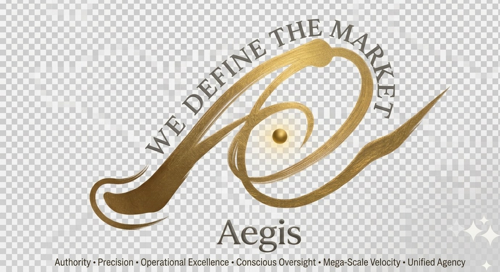
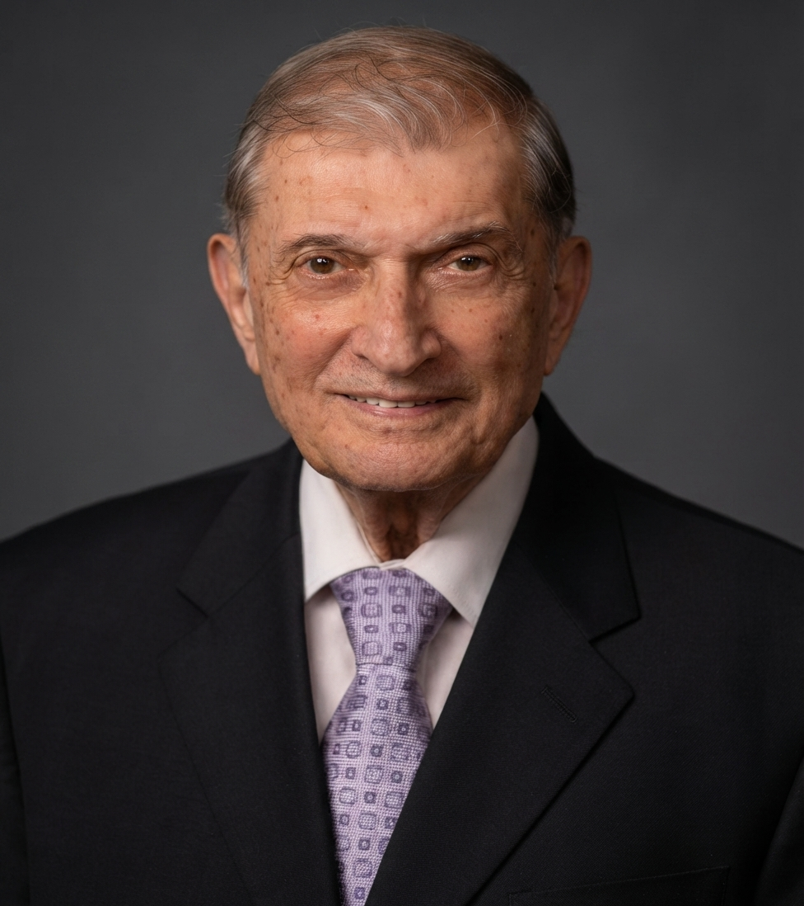

A professor of professors, and one of the founding figures of biomedical engineering as a discipline. This page exists because his influence on how I think about engineering, medicine, and the people at the center of both deserves to be documented properly — not left scattered across a dozen half-maintained pages.


Educator. Researcher. Mentor. Author of over 500 publications and 33 books.
Prof. Ghista's career begins at the moment biomedical engineering barely existed as a named field. After a PhD from Stanford in 1964, he joined NASA's Ames Research Center, building a biomedical engineering research program in aerospace medicine and cardiology alongside Stanford Medical School — work that produced one of the earliest textbooks on cardiac mechanics. At Washington University in St. Louis from 1969, he taught what were among the first biomedical engineering courses offered anywhere in the United States, while his valve research with Helmut Reul led to a patented prosthetic heart valve design (US Patent #94,379) still cited in the surgical literature today.
In 1971, he founded and chaired the Biomedical Engineering Division at the Indian Institute of Technology, Madras — the first biomedical engineering department in India. It was the first of several programs he would build from nothing: Chairman of Biomedical Engineering at McMaster University (1981–87), founding Chair of Biophysics and architect of the College of Medicine at the United Arab Emirates University (1989–95), and from 2000 to 2006, senior professor at Nanyang Technological University, Singapore, where he helped plan the university's biomedical engineering program and served on A*STAR's grants review board.
Prof. Ghista and I both ended up chasing the same problem — how a hospital or a health system should actually be run — but from opposite ends of it. He's a perfectionist and an idealist: he wants to go high-level, working out how care delivery should be modeled and measured in principle — papers like "Health-care System Engineering and Administration" (1997) and, later, "Healthcare Engineering for an Efficient Medical Care System" with P.W. Khong. I'm the one who prefers the ground — putting the idea into something a nurse or an administrator could actually open and use today, not a framework to be studied. I don't think either of us would say one matters more than the other. His high-level thinking is part of why I know what I'm building has to be measured against something real, not just shipped because it works.
That difference in approach came up directly while I was writing the white paper behind the Nurse Augmenting System. Prof. Ghista has spent decades on meditation and yoga — not as a side interest, but as serious, published work of its own, going back to EEG and biofeedback studies of the meditative state in the 1970s, and more recently a full book on meditation for wellbeing. He felt strongly that yoga belonged in the NAS framework. I agreed it belonged — I didn't agree it belonged at the center. NAS-BIO, the clinical readmission-prediction engine, is the operational core of the system. Yoga sits in the roadmap as NAS-YOG, one of five planned modules alongside nursing support, traditional Chinese medicine, assistive robotics, and clinical research — a wellness and rehabilitation layer, not the analytics engine. The same rule applies to traditional Chinese medicine: support stream, not main stream. Neither is meant to carry diagnostic weight; NAS-BIO does. That was my way of resolving it: give both a real place, not the headline. Looking back at his own published work since, I don't think he'd actually disagree with where it landed — even his own writing on meditation treats the physical health benefits as secondary to the practice's real purpose, which for him is spiritual, not clinical.
He's 90 now, and still writing. If this page does nothing else, I want it to be an accurate record of a career most people in this field will never come close to matching — and one small honest note that even mentors and students don't have to agree on everything to owe each other everything.
| Years | Institution | Role |
|---|---|---|
| 1964–69 | NASA Ames Research Center | Research Scientist, Aerospace Medicine & Cardiology |
| 1969–71 | Washington University, St. Louis | Associate Professor, Mechanical Engineering & Surgery |
| 1971–75 | Indian Institute of Technology, Madras | Founding Professor & Head, Biomedical Engineering |
| 1975–78 | NASA / Stanford VA Medical Center | Senior Research Scientist |
| 1978–81 | Michigan Technological University | Professor, Biomechanics & Engineering Mechanics |
| 1981–87 | McMaster University, Canada | Professor & Chairman, Biomedical Engineering |
| 1989–95 | United Arab Emirates University | Founding Professor & Chair, Biophysics |
| 1995–2000 | Osmania University, India | Senior Professor & Head, Biomedical Engineering |
| 2000–06 | Nanyang Technological University, Singapore | Senior Professor, Biomedical Engineering Program |
| 2007 | Parkway College of Health Sciences, Singapore | Founding Provost |
| 2012–present | University 2020 Foundation | President |
Rows in bold mark the four biomedical engineering programs he built from the ground up. Full career detail on his own site (linked below).
What sets Prof. Ghista apart from most engineers of his generation isn't just the range of institutions — it's the range of subjects he refused to treat as separate. Alongside the cardiovascular and orthopedic biomechanics work that built his early reputation, his bibliography spans hospital administration, sports science, cognitive science, sustainable community development, and a long-running project on socio-economic governance. He has described the university's role as being "partners in progress" with the community around it — a phrase that could just as easily describe the standard I've tried to hold the AI systems on this site to: built for the humans who have to use them, not just for the metrics that describe them.
The "long-running project on socio-economic governance" mentioned above has a name: Socio-Economic Democracy (SED), and it's the subject of its own book in his bibliography below. In July 2026, Prof. Ghista sent me his latest article on the subject, "Neo Socio-Economic-Political Restructuring of Developing and Developed Countries for Promoting Dignified Human Living, Providing the Template for World Peace," and asked that it be documented here as part of his intellectual legacy — so this section is his vision, in his words, not mine.
His starting observation: most formerly colonized nations remain underdeveloped no matter which 20th-century path they took — capitalism, which often meant re-inviting foreign multinationals, or communism, which often meant a regimented, centrally-controlled society. SED proposes a third structure, built up from seven linked concepts: autonomous, self-reliant local communities; medium and large corporations organized as worker cooperatives, so people share in the wealth they help create ("collective capitalism"); a people-centric political system in which professional and civic associations — teachers, lawyers, doctors — elect their most qualified members to local government, rather than political parties competing for power; socio-economic democracy itself, meaning shared wealth creation paired with merit-based governance; broad human rights guarantees, including a right to employment at a dignified minimum wage; and a nested global structure — local communities grouping into socio-economic blocs, then zones, then regional federations, ultimately feeding into a global parliament focused on stability and shared welfare rather than domination by a few powerful nations.
He frames it as a response to what he sees as the root cause of neglect and suffering worldwide: political systems built around parties and politicians rather than around the people and communities they're meant to serve. I haven't tried to evaluate the politics of it here — that's not what this page is for. It's his vision, and it deserves to be recorded as he wrote it.
A selection of roughly 30 authored or edited books. Full bibliography on his own sites, linked below.
That 2023 book above isn't just something I'd recommend — five of its chapters carry my name alongside his. When Prof. Ghista sent me the list in July 2026, he put it plainly: they "bear testimony to our unique and visionary collaboration in academic fields." I'll let the chapters speak for that themselves:
As part of AEGIS's applied research programme, we produced a full clinical AI textbook built around Parkinson's disease detection — structured for engineering students and complete with laboratory exercises, worked examples, and a step-by-step guided project. This is the first textbook AEGIS has dedicated to a person: Prof. Ghista, whose career in biomedical engineering laid the intellectual groundwork for exactly this kind of human-centred clinical AI work.
It is freely available here as a tribute. Enter your name and email below — we will send the PDF link directly to your inbox. If you use it in teaching or research, we only ask that you write back to us at aegisloh@aegishumanai.com.
This page is a starting point, not a replacement for his own record of his work. For the full bibliography, career detail, and his current writing: